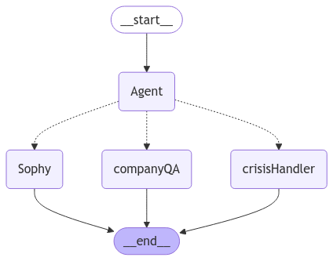

Introduction
In today’s fast-paced world, mental health is more important than ever. Yet, many people struggle with their emotional well-being, often facing issues alone. Stress, anxiety, and overwhelming thoughts can build up without a clear outlet, leaving individuals feeling isolated and unheard. Fortunately, there’s an old but powerful piece of advice: “Talking to a friend about your problems can help.” When we share our struggles, it often helps to sort through them, gain new perspectives, and release the tension that builds up over time.
It’s important to note that talking to someone is not a cure-all for mental health problems. If you are struggling with a serious mental health condition, it is important to seek professional help from a therapist or counselor. However, talking to someone you trust can be a helpful first step in managing your mental health.
But not everyone has someone they can turn to when they need it most. This gap presents a significant challenge. How can we provide people with a safe, understanding space to express their feelings and navigate their mental health struggles? - Serene Solace
Scope
- Provides emotional support through empathetic, personalized conversations.
- Maintains user confidentiality.
- Guides user to Crisis Management helpline when required.
- Answers company (serene solace) related questions.
Model Selection
When deciding on the right approach to model selection for Serene Solace, two key factors must be carefully considered: whether to build a model from scratch or use pretrained models, and the financial implications of selecting an API or self-hosted solution.
Build from Scratch vs. Use Pretrained Models: Building a model from the ground up requires significant investment in terms of time, expertise, and computational resources. This process is costly and can delay deployment. On the other hand, using pretrained models offers a practical and cost-effective solution. These models have already been trained on large datasets and are ready for fine-tuning, saving both time and resources while providing high-quality performance from the start.
API Costs vs. Self-Hosting: When considering the use of language models, the decision to use APIs versus hosting a model locally comes down to ongoing costs, control, and privacy. Using an API service can incur substantial recurring costs, especially as the volume of users and requests grows. These costs can add up over time, potentially making API usage less cost-effective for long-term scalability. Additionally, APIs often come with limitations on data privacy, as user data may be processed by third-party services.
On the other hand, self-hosting an open-source model allows for full control over data privacy and confidentiality, which is crucial for an emotional support service. By hosting the model locally, we can ensure that sensitive information remains within the organization’s secure infrastructure, addressing privacy concerns. A viable and cost-effective option for self-hosting is the Llama 3.2:1b model, an open-source, lightweight language model. It offers a balance of performance and efficiency, reducing the need for expensive cloud API services while still providing high-quality, empathetic conversations.
In conclusion, for Serene Solace’s focus on providing confidential, emotionally supportive conversations, using an open-source model like Llama 3.2:1b and hosting it locally proves to be both cost-effective and privacy-conscious. This solution minimizes the financial burden of API usage while ensuring user data stays secure.
Workflow

- State Graph:
- Sophy uses
langgraphto build a state graph. - The graph manages transitions between nodes:
Agent,Sophy,CompanyQA, andCrisisHandler.
- Agent Node:
- Determines the appropriate route based on user input:
Sophy: Normal conversation for mental health support.CrisisHandler: Directs the user to an active crisis helpline.CompanyQA: Answers company-related queries.
- Sophy:
- Uses llama3.21b model to chat empathetically.
- Dynamically summarizes ongoing exchanges to maintain context and improve conversation flow.
- Company Q&A:
- Leverages FAISS for document retrieval and answers user questions based on the
company.mdfile.
- Crisis Handling:
- Provides a helpline number if harmful intent is detected.
Future Improvements
- Smoother integration between flows.
- UI for the chat.
- Expand the knowledge base for company Q&A.
- Enhance the detection mechanism for harmful intent.
- Multi User Interactions.